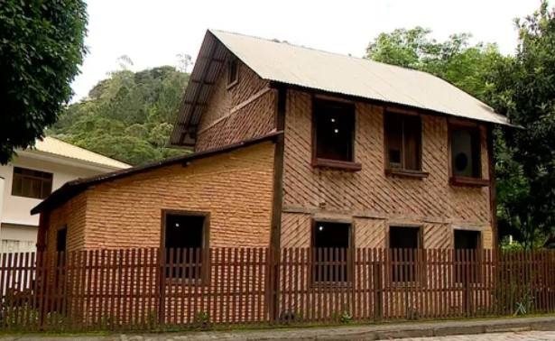
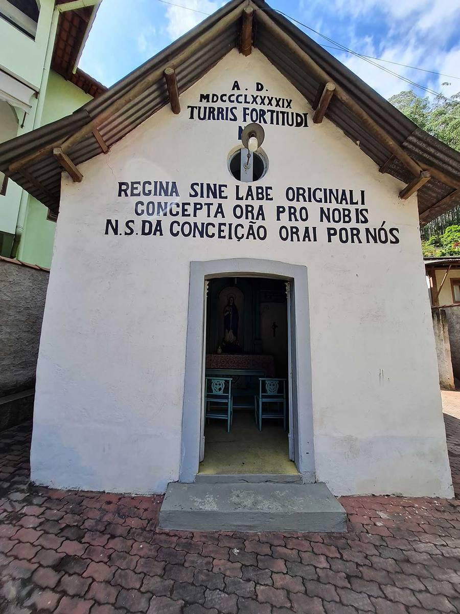
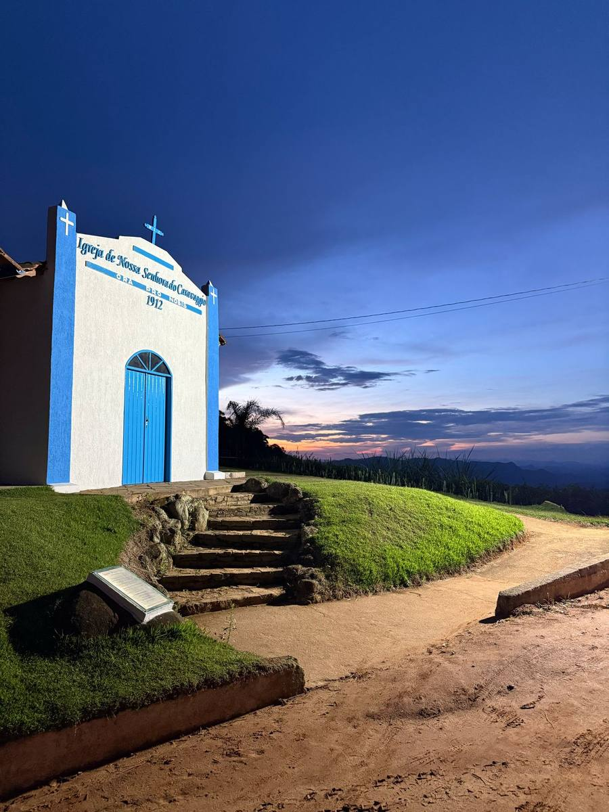
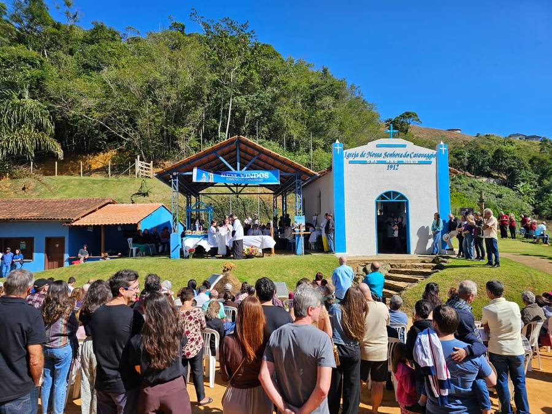
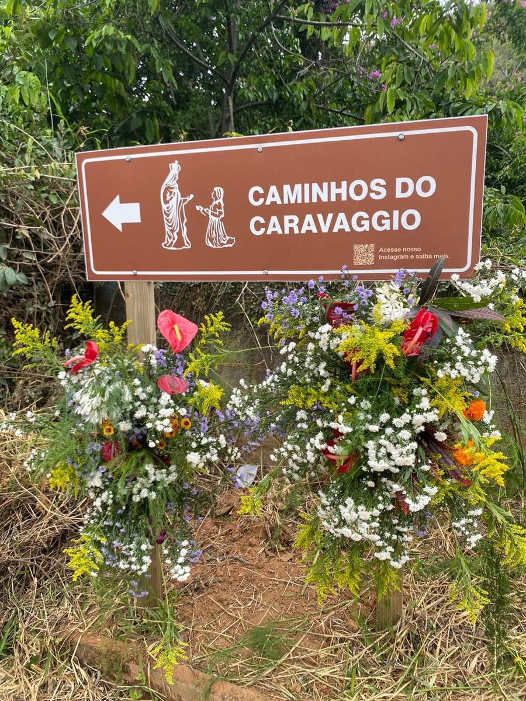
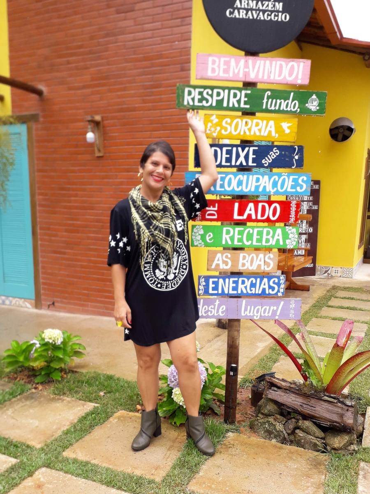
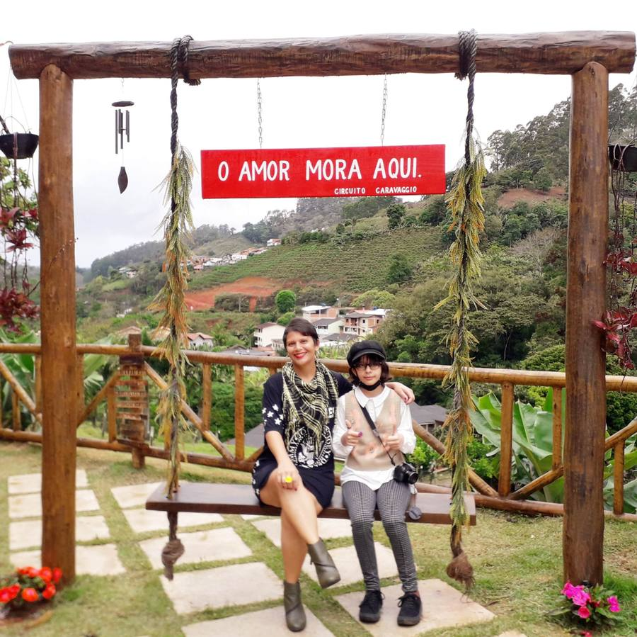

Santa Teresa e o Caravaggio: viver onde nasceu a Itália no Brasil
Tem lugar onde a história fica guardada em museu. E tem lugar onde ela está na receita que ainda se repete no almoço de domingo, no sotaque cantado dos mais velhos, no vinho que sai da parreira do quintal e numa montanha que não mudou desde que os primeiros imigrantes olharam para ela, há 150 anos. Santa Teresa é do segundo tipo. E o Caravaggio é o pedaço mais autêntico dessa história — que hoje é também um dos endereços mais procurados de quem quer morar ou investir aqui.
1874: o navio que mudou o Espírito Santo
Em 17 de fevereiro de 1874, o veleiro La Sofia atracou no porto de Vitória com 388 imigrantes italianos, contratados pelo trentino Pietro Tabacchi. Nada saiu como o combinado: faltava terra preparada, faltava a estrutura prometida, e deu revolta. Parte dos colonos seguiu para o Sul do país. Outra parte aceitou a proposta do governo da província e foi direcionada ao Núcleo de Timbuhy, na Colônia Imperial de Santa Leopoldina — o território que viraria Santa Teresa.
No ano seguinte, em 31 de maio de 1875, o navio Rivadavia trouxe mais 150 famílias, das quais 60 seguiram para esse mesmo núcleo. Em 26 de junho de 1875 houve o sorteio dos lotes, e é essa data que a cidade celebra até hoje como o marco de fundação.
Repara numa coisa: essas famílias não escolheram Santa Teresa. Foram mandadas para cá. O que elas escolheram foi ficar.
A primeira cidade italiana do Brasil
No Arquivo Público do Estado do Espírito Santo há centenas de documentos sobre a chegada dessas famílias. Um deles é um ofício de 28 de outubro de 1874, em que o colono Francesco Merlo pede ao Presidente da Província o ressarcimento de 122 florins que gastou com a passagem da Itália e nunca recebeu de volta. É um papel de cobrança, prosaico — e é justamente ele que prova a presença organizada de italianos aqui antes de qualquer outro registro equivalente no país.
Foi com base nesse acervo que a Lei Federal nº 13.617, de 11 de janeiro de 2018, reconheceu oficialmente Santa Teresa como pioneira da imigração italiana no Brasil.
Por que tanta gente atravessou o Atlântico
A Itália tinha acabado de se unificar, em 1861, mas unificação política não encheu barriga de ninguém. No norte — no Vêneto e no Trentino, de onde veio boa parte dos nossos colonos — havia campo demais dividido em pedaços pequenos demais, colheita ruim e uma indústria ainda incipiente, incapaz de absorver quem sobrava da roça. Resultado: uma multidão de camponeses sem terra, sem trabalho e sem perspectiva.
Do lado de cá, o Brasil vivia o contrário: terra sobrando e um governo querendo substituir a mão de obra escravizada por trabalhador livre e ocupar regiões vazias. Excedente de gente lá, demanda por gente aqui. Foi essa conta que colocou transatlântico saindo de Gênova em rotina, década após década.
As famílias que chegaram a Santa Teresa foram o primeiro capítulo dessa história. Pioneiras não só na chegada, mas em transformar floresta em lavoura e em adaptar tradição europeia a um clima que elas não conheciam.
Por que ficaram: um clima que lembrava casa
A sede do município está a 675 metros de altitude, a maior do Espírito Santo, e a média anual fica em torno de 16 °C. Inverno seco e ameno, com mínimas por volta de 12 °C; verão úmido que raramente passa dos 29 °C. Nada parecido com o calor do litoral, que está a menos de 80 km daqui, e muito mais parecido com os vales de montanha que aquelas famílias tinham deixado para trás.
Para quem vinha de gerações de roça, isso queria dizer uma coisa bem prática: o que eles sabiam plantar tinha chance de pegar. A videira veio na bagagem e encontrou altitude, noite fria e boa drenagem nas encostas. A maior produção de vinho do estado começou exatamente assim — como vinho de mesa de família, não como negócio. Depois vieram a terra fértil de Mata Atlântica, a água das nascentes de serra e o café, que deu à colônia a renda para comprar a própria terra.
O resto foi a paisagem: o relevo íngreme, a neblina que desce no fim da tarde, as parreiras em terraço. Quem chegava reconhecia ali, com outras árvores e outro céu, alguma coisa da terra de origem.
A Casa Lambert: como se morava no começo de tudo
Não existia loja de material de construção, cimento nem estrada decente. Existia mata, argila e a memória de como se construía no Trentino. As primeiras casas daqui nasceram disso: pau a pique — também chamado de taipa, tabique ou estuque —, uma trama de madeira preenchida com barro, feita com o que a terra dava e com o trabalho da família inteira. Casas simples, de poucos cômodos, organizadas em volta da cozinha, que era sala, aquecedor e ponto de encontro depois de um dia de roça.

A Casa Lambert, de 1875, no bairro São Lourenço, é o exemplar mais bem preservado dessa arquitetura — e o mais revelador. Foi construída pelos irmãos trentinos Antônio e Virgílio Lambert, e tem um detalhe que quem visita não esquece: a madeira externa foi instalada de propósito em posição transversal, para a água da chuva escorrer sem encharcar o barro.
Isso não foi sorte. Antônio era pintor e escultor formado pela Academia de Belas Artes de Veneza, e Virgílio tinha experiência em manutenção de navios — alguém que sabia, por ofício, como impedir que a água entrasse onde não devia. Dois irmãos que trouxeram na cabeça um conhecimento que nenhum material dali podia comprar.
E tem uma coisa que diferencia a Casa Lambert de tanto museu por aí: ela nunca foi feita para ser visitada. Foi feita para se morar, e abrigou três gerações da mesma família. Foi tombada como Patrimônio Histórico Estadual em 1985 e mesmo assim seguiu servindo de moradia aos herdeiros até 2007. Só depois foi restaurada, em 2010, e aberta ao público em 2011 como Casa de Memória. No térreo está a cozinha, com objetos dos próprios moradores. No quintal, a oficina onde os irmãos faziam esculturas e peças de uso diário — espaço que um neto herdou e usou até os anos 1990.
O ingresso é simbólico, e vale confirmar o horário antes de ir, porque muda ao longo do ano. Mas o motivo da visita não é o preço. É sair de lá olhando as construções antigas de Santa Teresa de outro jeito, entendendo que cada uma guarda uma solução inventada na hora por gente que não tinha manual — só necessidade e conhecimento herdado.
Da capelinha de 1899 à igrejinha de 1912: uma geração de distância
Em frente à Casa Lambert está a Capela de Nossa Senhora da Conceição, de 1899. Dentro dela há uma imagem da santa entalhada em madeira por Antônio Lambert: uma formação europeia refinada aplicada, décadas depois, à devoção de uma comunidade rural do outro lado do mundo. Na fachada, em letras pretas: Regina sine labe originali concepta, ora pro nobis. Logo abaixo, a tradução que os próprios colonos pintaram — "N. S. da Conceição, orai por nós".

Guarda essa frase, porque ela vai reaparecer.
A Casa Lambert fica no bairro São Lourenço. É o mesmo bairro onde, pouco depois, os descendentes daquelas famílias ergueriam a Igrejinha do Caravaggio. Entre a capelinha levantada em frente à casa dos irmãos Lambert, em 1899, e a igrejinha concluída em 1912 no alto do vale, passa uma geração só: os filhos de quem desembarcou do La Sofia e do Rivadavia, agora com lote pago, parreira produzindo e fôlego para construir não mais apenas o necessário, mas o que era símbolo.
O caminho que essas famílias abriram na mata para chegar às roças, à capela e às casas umas das outras é, hoje, a estrada que sobe o vale. Os mesmos 14 quilômetros que o mundo passou a chamar de Circuito Caravaggio.
A Igrejinha do Caravaggio: a fé que deu nome ao circuito
Antes de existir roteiro turístico, mapa ou placa de sinalização, existia a igrejinha. Erguida pelos primeiros imigrantes a partir do fim do século XIX e concluída em 1912, foi dedicada a Nossa Senhora do Caravaggio — devoção que as famílias trouxeram do norte da Itália, nascida da aparição atribuída a 26 de maio de 1432 à camponesa Joaneta, na vila de Caravaggio, entre Milão e Veneza.
A imagem que ocupa o altar veio da Itália com os próprios imigrantes. Atravessou o Atlântico junto com as famílias e está ali até hoje. Foi essa padroeira que batizou o vale, o bairro e, muito depois, o próprio circuito.

Construída com o dinheiro e as mãos de quem morava ali, a capela guarda até hoje uma placa junto à entrada com os nomes das famílias que a levantaram — um registro de quem transformou mata em lavoura e lavoura em comunidade. Simples por fora, branca com detalhes em azul, ocupa um dos pontos mais altos do vale. A vista que se abre da porta é a mesma que atrai os praticantes de voo livre logo ao lado.
Ela já foi restaurada mais de uma vez, sempre com apoio dos próprios moradores. E segue viva: no fim de maio, na festa de Nossa Senhora do Caravaggio, a comunidade se reúne ali como faz há mais de um século.

Circuito Caravaggio: onde a história virou paisagem
Se Santa Teresa é a raiz, o Circuito Caravaggio é onde essa raiz floresce em experiência. São aproximadamente 14 km — reconhecidos como rota turística estadual em 2024 — reunindo mais de 20 empreendimentos entre vinícolas, cafés rurais, cervejarias, restaurantes e pousadas, cercados de trilha e de paisagem.

É lá que fica a Rampa de Voo Livre do Caravaggio, com uma das vistas mais bonitas da serra capixaba, e a própria igrejinha, ponto de referência do São Lourenço. A região junta duas coisas que raramente andam juntas: a tranquilidade do campo, com estrada simples e ar de montanha, e uma infraestrutura turística que só cresce — vinícolas históricas como Romanha, Matiello e Tomazelli, cervejarias como a 3 Santas, e um fluxo constante de visitante atrás de turismo rural.
As parreiras que aquelas famílias plantaram para ter vinho na mesa viraram vinícolas centenárias. A cozinha que era o centro da casa virou restaurante e café colonial. A devoção que atravessou o oceano dentro de uma mala virou festa que enche o vale. Nada ali foi inventado para o turismo: o turismo chegou depois, atrás de uma paisagem que já existia.

Cerca de 90% da cidade tem sangue italiano
É um número que se sente em cada esquina. A arquitetura em pau a pique de construções centenárias convive com cantinas de família que produzem vinho há três, quatro gerações. Santa Teresa é hoje o maior produtor de vinho do Espírito Santo, com cerca de 80% da produção estadual, em variedades como Niágara Rosada, Isabel, Moscatel e Cabernet Sauvignon.
A cultura também está nas festas — como a Festa do Imigrante Italiano, promovida pelo Circolo Trentino di Santa Teresa — e na gastronomia, com cafés coloniais, cervejarias artesanais e restaurantes que servem receita passada de nonna para nonna.
Comprar aqui é entrar numa história que continua
Comprar um terreno, um sítio ou uma casa no Circuito Caravaggio não é só adquirir um imóvel. É se instalar dentro de um patrimônio cultural em plena atividade, valorizado tanto pelo turismo quanto pela qualidade de vida. Vinícola, trilha, gastronomia reconhecida e Mata Atlântica preservada por perto fazem da região um dos endereços mais cobiçados do interior capixaba — seja para segunda residência de fim de semana, para pousada rural, ou simplesmente para viver rodeado pela mesma serra que os imigrantes avistaram em 1875.

Eu conheço cada curva dessa estrada e cada família que está atrás dessas porteiras. Se você quer encontrar o imóvel certo nesse cenário, fala comigo — a gente sobe o vale junto.
Quer conhecer os terrenos disponíveis no Circuito Caravaggio e em Santa Teresa?
Falar com a Milla no WhatsAppFotos: arquivo pessoal, exceto a da Casa Lambert. Datas, números de imigrantes e o ofício de Francesco Merlo (28/10/1874) constam do acervo do Arquivo Público do Estado do Espírito Santo e do site da Prefeitura de Santa Teresa. A Lei Federal nº 13.617 é de 11 de janeiro de 2018 — algumas fontes oficiais trazem 2017 por engano. Horários da Casa Lambert e programação da festa mudam ao longo do ano; vale confirmar antes de ir.